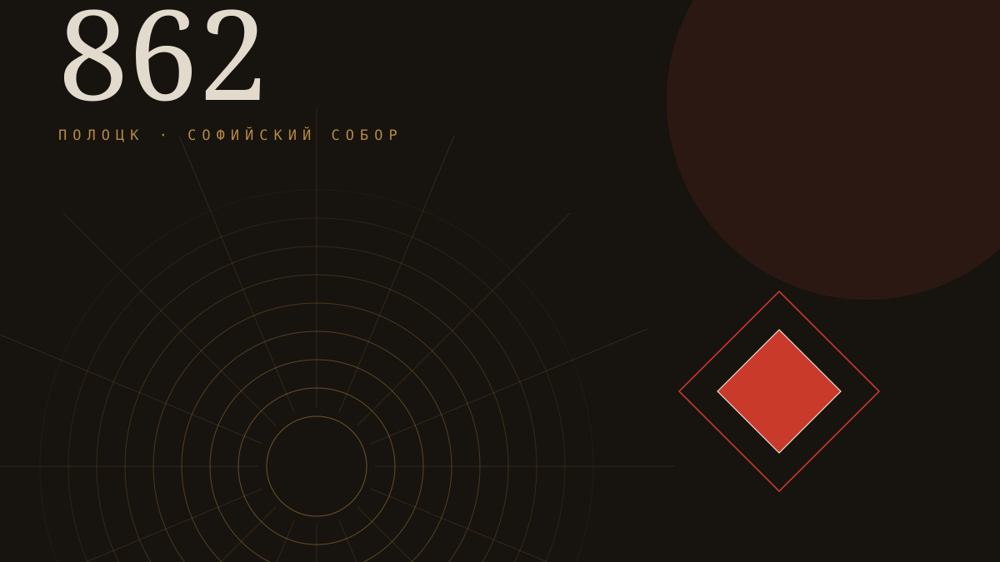

862 Первое письменное упоминание
Полоцк: город, который читает и торгует
Полоцк впервые упомянут в «Повести временных лет» под 862 годом — древнейшая дата в белорусской истории. Через него идут пути «из варяг в греки»: сюда приходят книги, вести и товары, а вместе с ними — привычка записывать и сохранять.
Ключевое событие
Первое упоминание Полоцка в летописи
Город выходит на историческую сцену как центр ремесла и торговли на Западной Двине.
«Повесть временных лет»
Путь «из варяг в греки»
Вечевой порядок
